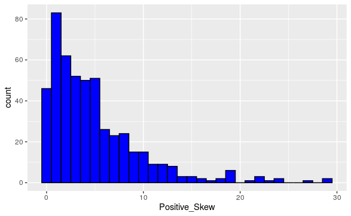

Section 1.4 Centers of Data (B4)
When using data to make predictions about random variables, it is useful to be able to discuss the notion of central or “average” values of that data. There are different ways to approach this.
In this section, we will show how to identify and compute different notions of centrality.
Run the following code to download the ncbirths.csv data set:
In 2004, the state of North Carolina released to the public a large data set containing information on births recorded in this state. This data set has been of interest to medical researchers who are studying the relation between habits and practices of expectant mothers and the birth of their children. This is a random sample of 1,000 cases from this data set.
Exploration 1.4.1.
A group of seven friends decides to compare their tax refunds, listed in Table 1.4.1.
| $3,000 | $3,000 | $3,000 | $3,500 |
| $3,700 | $3,800 | $15,000 |
For each of the given quotes, write a sentence or two explaining whether you agree or disagree with the speaker.
(a)
“The most common tax refund is $3,000. Therefore, the average tax refund in this group is $3,000.”
(b)
“When ordered from least to greatest, the middle tax refund is $3,500. Therefore, the average tax refund in this group is $3,500.”
(c)
“When the seven refunds are added together and divided by \(7\text{,}\) the result is $5,000. Therefore, the average tax refund in this group is $5,000.”
Activity 1.4.2.
There are several notions of “average”, that is, several ways to describe the center of a dataset.
Most commonly, “average” is used to describe the mean of a dataset. If a dataset contains the \(n\) values \(x_0,x_1,\dots,x_{n-1}\text{,}\) then the mean is defined by the following formula:
For example, the mean of the counting numbers \(2,3,5,7,18\) is \(\frac{2+3+5+7+18}{5}=7\text{:}\) all the values in the collection are added together, and then divided by the amount of data in the collection.
(a)
Show that \(8\) is the mean of the counting numbers \(4,8,9,11\text{.}\)
(b)
Is it possible for the mean of a dataset to not belong to the dataset itself? If so, give an example of such a dataset. If not, explain why.
Activity 1.4.3. Birth Weight Mean.
(a)
Run the following code to display the mean of the birth weight of babies from North Carolina in 2004 in pounds:
(b)
Run the following code to display the histogram birth weight of babies from North Carolina in 2004 in pounds, along with the mean:
Activity 1.4.4. Mean of Variable of Choice.
(a)
Follow this link and identify a numerical vairable whose mean you wish to find. https://www.openintro.org/data/index.php?data=ncbirths.
(b)
Edit the following code to display the mean of your chosen variable:
(c)
Run the following code to display the histogram for your variable, along with the mean:
For smaller data sets, Desmos is a useful way to compute the mean. Enter your Data into L=[...]
Definition 1.4.2.
We use:
\(\bar{x}\) the sample mean to denote the mean of data set representing a sample.
\(\mu\) the population mean to denote the mean of data set representing a population.
Activity 1.4.5.
When data is ordered from least to greatest, the middle value is called its median. For example, the median of \(1,1,6,7,9\) is \(6\text{.}\)
(a)
Find the median of \(9,12,3,0,11,9,2\text{.}\)
(b)
If a dataset has two middle values, \(a\) and \(b\text{,}\) then their mean \(\frac{a+b}{2}\) is used as the median. For example, the median of \(4,6,7,9,10,13\) is \(\frac{7+9}{2}=8\text{.}\)
Make up a collection of six numbers such that its median is \(5.5\text{.}\)
Activity 1.4.6. Birth Weight Median.
(a)
Run the following code to display the median of the birth weight of babies from North Carolina in 2004 in pounds:
(b)
Run the following code to display the histogram birth weight of babies from North Carolina in 2004 in pounds, along with the mean:
Activity 1.4.7. Median of Variable of Choice.
(a)
Follow this link and identify a numerical vairable whose median you wish to find. https://www.openintro.org/data/index.php?data=ncbirths.
(b)
Edit the following code to display the mean of your chosen variable:
(c)
Run the following code to display the histogram for your variable, along with the median:
Activity 1.4.8. Comparing Means to Medians.
(a)
In the following list of data, would you describe the difference between the mean and median minor or significant?
(b)
In the following list of data, would you describe the difference between the mean and median minor or significant?
(c)
In the Desmos graph below, add data points to the end of L=[4,4,5,5,5,6,6,6,7,7] so that the median is significantly greater than the mean.
(d)
In the Desmos graph below, add data points to the end of L=[4,4,5,5,5,6,6,6,7,7] so that the median is significantly less than the mean.
(e)
What do you suppose causes a data set to have a median be significantly greater than or less than the mean?
Definition 1.4.3.
- A numerical variable is said to have positive skew or right skew if there is a tail or outliers to the right of the bulk of the data. This is categorized by the mean being greater than the median. (Intuitively, the tail values or outliers “pull up” the value of the mean.) 
Figure 1.4.4. A Positive Skewed Data Set. - A numerical variable is said to have negative skew or left skew if there is a tail or outliers to the left of the bulk of the data. This is categorized by the mean being less than the median. (Intuitively, the tail values or outliers “pull down” the value of the mean.)

Figure 1.4.5. A Negative Skewed Data Set. - A numerical variable is said to have no skew or symmetric if the left and right extremal behavior resemble each other. This is categorized by the mean being equal than the median.

Figure 1.4.6. A Symmetric Data Set.
Activity 1.4.9. Birth Weight Skew.
(a)
Run the following code to create a new data set, which consists of the subset of the originasl data set where the Mother was a smoker:
(b)
Run the following code to display the histogram birth weight of babies whose mother smoked, along with the mean and median weights:
(c)
What does this tell you about the skewness of the birth weights of babies who's mothers smoked?
Activity 1.4.10. Skew of Variable of Choice.
(a)
Edit the following code and run it to create a new data set, based on whatever criteria you want this set to have:
(b)
Edit the following code to display the histogram of whatever numerical variable you choose, along with the mean and median:
(c)
What does this tell you about the skewness of the the variable in question?
Activity 1.4.11.
The mode of a dataset is simply its most-repeated value. For example, the mode of the collection of values \(3,3,5,5,5,8,8,9,10,10\) is \(5\text{.}\)
(a)
Find the mode of the values \(7, 5, 1, 3, 3, 1, 9, 9, 1, 5\text{.}\)
(b)
It's possible that a dataset may have many different modes. For example, both \(2\) and \(5\) are modes for the values in the list [4,2,8,5,5,9,2,7].
Make up an example of a dataset with seven values that has both \(4\) and \(7\) as modes.
Activity 1.4.12. Length of Pregnancy Mode.
(a)
Run the following code to display the histogram length of pregnancies for mothers from North Carolina in 2004 in weeks:
(b)
How is the mode reflected in the histogram?
Activity 1.4.13. Averages for Categorical Variables.
(a)
For Categorical Varibles which of the notions of average: mean, median, mode, makes sense?